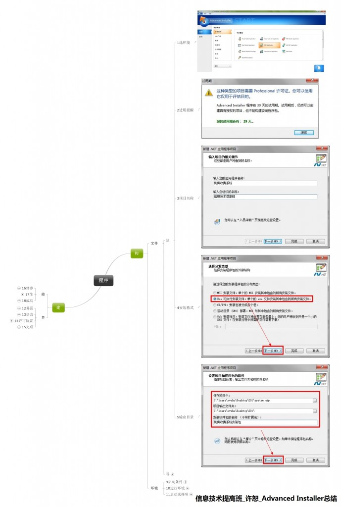
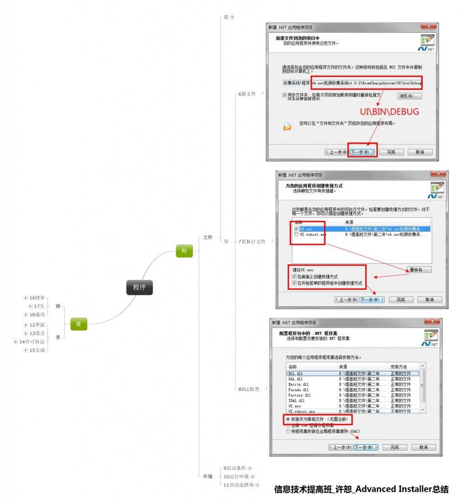
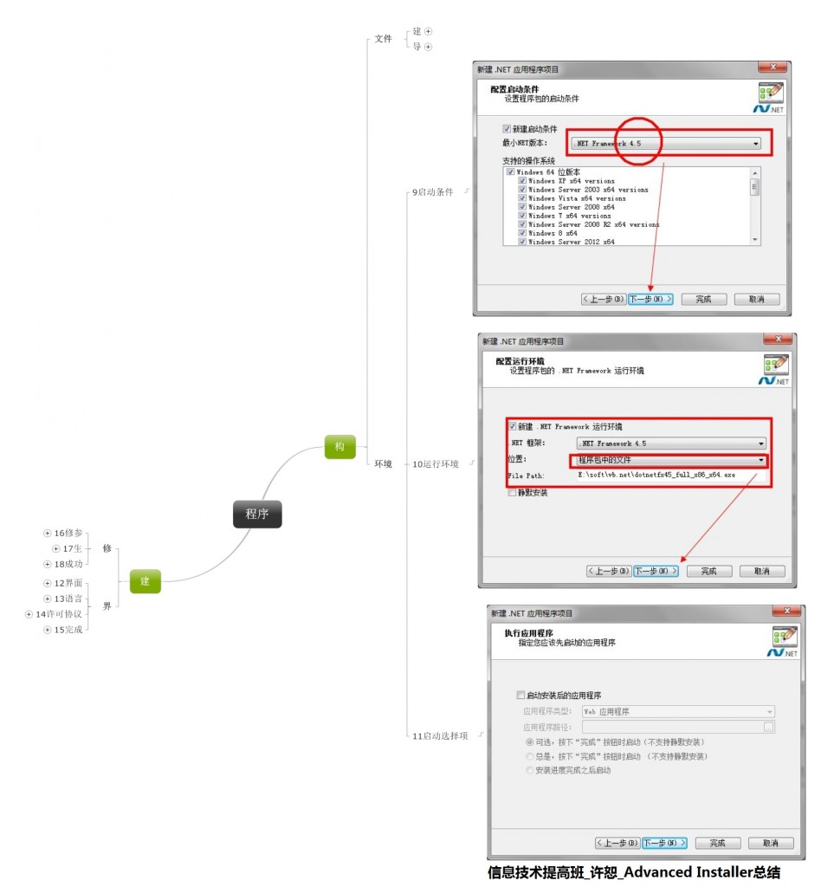
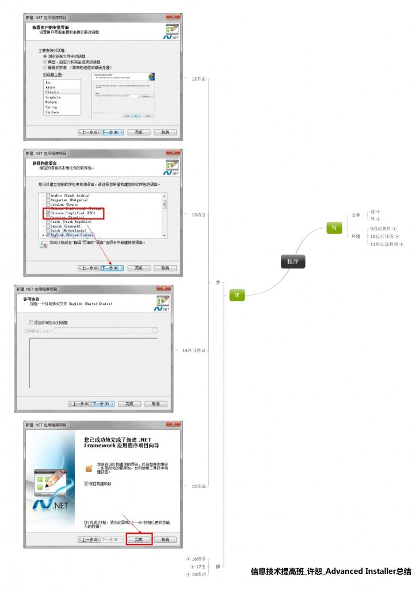
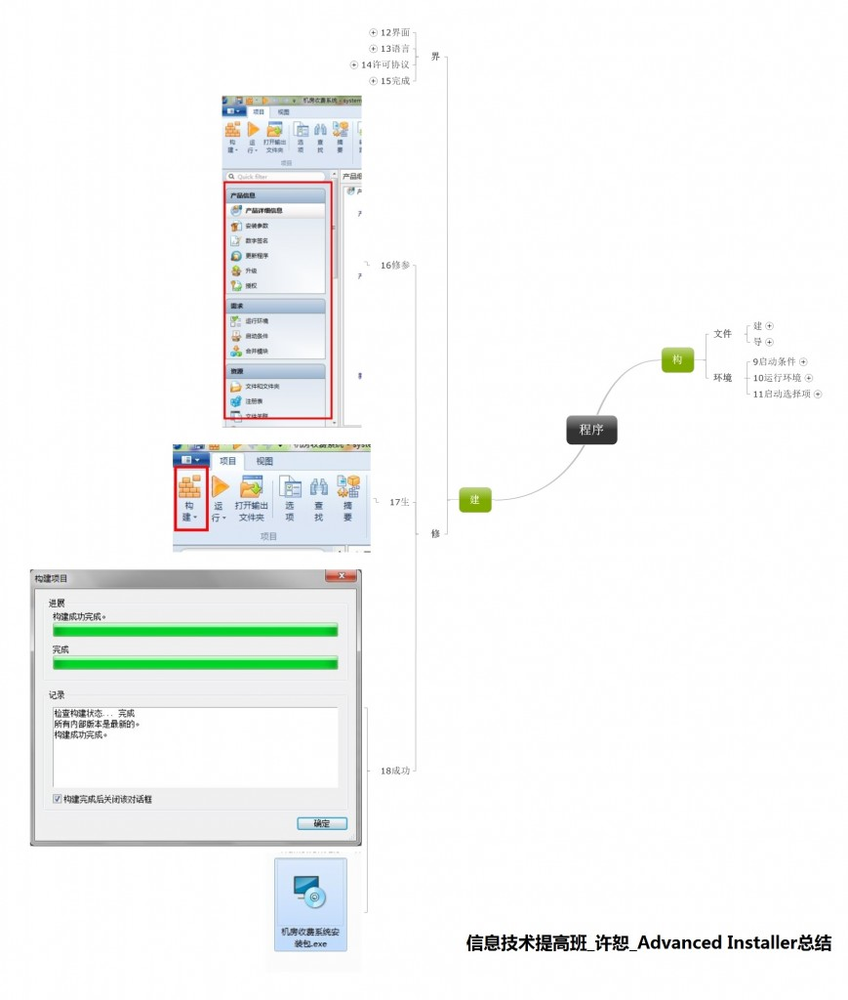

首页: >
未分类 > 先尝试一步——简单应用AdvancedInstaller98打包发布vbnet程序（vs2012）
vb.net机房收费系统总算到了收尾的阶段，剩余的工作是修修改改，由于我用的是vs2012写的程序，自带的打包发布工具没有集成，通过链接下载由屡屡不成，为了效率考虑，决定试水Advanced Installer进行打包，现在将一些简单的应用与大家分享：
Advanced Installer 是一款 Windows Installer 编写工具。Advanced Installer 是一款功能强大、可生成符合 MS Windows 认证的 Windows Installer 的 MSI 安装包制作工具，具有友好的图形用户界面，直观而且非常简单的界面，创建 MSI 文件包非常方便，用户只需添加文件，修改名称，添加按钮就可以了，无需任何脚本方面的知识，并且生成的安装文件保证符合 Windows
最佳操作建议。
官网下载地址：http://www.advancedinstaller.com/（建议下载30天试用版本）
2，安装教程
正常的安装软件顺序，和我们的QQ，飞信一样，没有特别的东西
下一步进行到底，直至完成
3，简单使用教程
（1）总体流程（单击图片下载源思维导图文件）
（2）构建运营大环境（抽象）

（3）导入程序原文件

（4）配置软件环境（具体）
注意：.net framework的版本是在源程序建立之初决定的，后期的修改较为繁琐，易出错，请大家认真选择
vs2010 为 .net framework 4.0
vs2012 为 .net framework 4.5
其他可选.net framework 4.0 或者 .net framework 3.5
.net framework 的安装包可以直接在后期生成的启动文件中加载，请事先下载好

（5）构造软件安装界面

（6）建立安装程序（成功）

类似的工具还有很多，vs也自带一个，但是我们不能局限在他已经提供的资源上，世界很精彩，原地踏步不能发现无边的风景，勇于向前才能饱览风景！想起米老师经典的一句话“不将就是发现的原动力”，与大家共勉！